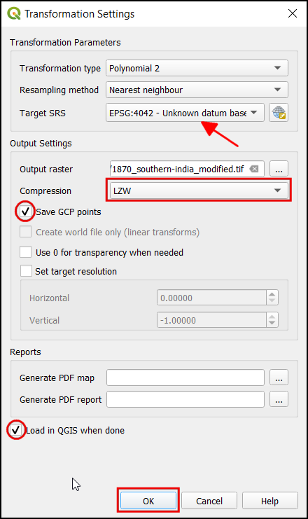
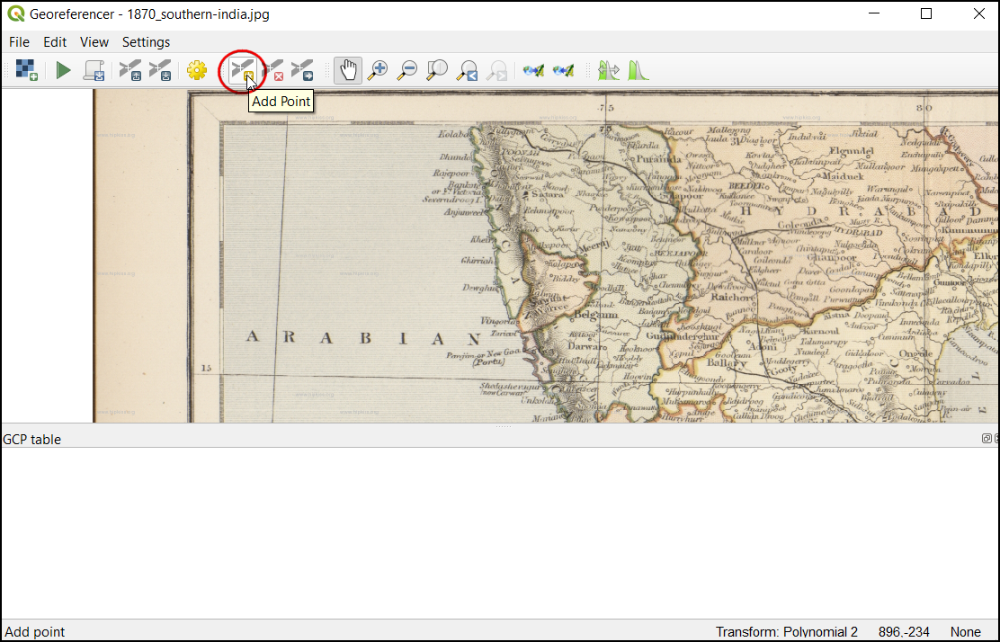

Ujaval Gandhi
Ujaval GandhiGeoreferențierea Foilor Topografice și a Hărților Scanate (QGIS3)¶
Multe proiecte GIS necesită georeferențierea unor date raster. Georeferențierea reprezintă procesul de atribuire a coordonatelor lumii reale pentru fiecare pixel al rasterului. De multe ori, aceste coordonate sunt obținute prin efectuarea de observații în teren - mai precis, prin folosirea unui dispozitiv GPS la colectarea coordonatelor unor entități ușor identificabile în imagine sau în hartă. În unele cazuri, atunci când urmăriți să digitizați hărți scanate, puteți obține coordonatele chiar din marcajele de pe hartă. Folosind aceste coordonate sau GCP-urile (Ground Control Points), imaginea va fi adaptată, pentru a se potrivi sistemului de coordonate ales. În acest tutorial, vom discuta conceptele, strategiile și instrumentele din QGIS necesare efectuării unei georeferențieri de mare precizie.
This tutorial is to geo-reference an image which has coordinates information available on the map image itself (i.e. grids with labels). If your source image does not have such information, you can use the method outlined in Georeferențierea Imaginilor Aeriene (QGIS3)
Privire de ansamblu asupra activității¶
Vom folosi o hartă scanată, din 1870, a sudului Indiei, pe care o vom georeferenția folosind QGIS.
Alte competențe pe care le veți dobândi¶
Cum stabilim datumul și sistemul de coordonate pentru hărțile vechi.
Save the GCP created.
Edit the created GCP for fine tuning.
Obținerea datelor¶
Site-ul Hipkiss’s Scanned Old Maps are o colecție excelentă de hărți scanate, din domeniul public, pe care o puteți folosi în cercetare.
Descărcați Harta din 1870 a sudului Indiei și salvați-o ca imagine JPG pe hard disk.
Pentru comoditate, puteți descărca o copie a acestor date, făcând clic pe link-ul următor:
Procedura¶
Open QGIS and click on to open the tool.
Notă
From QGIS versions 3.26 onwards, the Georeferencer can be launched from .

The Georeferencer is divided into 2 sections. The top section where the image will be displayed and the bottom section where a table showing your GCPs will appear.

Acum vom deschide imaginea noastră JPG. Mergeți la . Navigați la imaginea, anterior descărcată, a hărții scanate și faceți clic pe Open.

You will see the image will be loaded on the top section. You can use the zoom/pan controls in the toolbar to learn more about the map.

Now we need to assign coordinates to some points on this map. If you look closely, you will see coordinate grid with markings. These are Latitude and Longitude grid lines.

Before adding Ground Control Points (GCP), we need to define the Transformation Settings. Click on the gear icon in georeferencing window to open the Transformation settings dialog.

In the Transformation settings dialog, choose the Transformation type as
Polynomial 2. See QGIS Documentation to learn about different transformation types and their uses. Then select the Resampling method as theNearest neighbor. Click the Select CRS button next to Target SRS.

If you are geo-referencing a scanned map like this, you can obtain the CRS information from the map itself. Looking at our map image, the coordinates are in Latitude/Longitude. There is no datum information given, so we have to assume an appropriate one. Since it is India and the map is quite old, we can bet the Everest 1830 datum would give us good results. Search for
everestand select the CRS with oldest definition of the Everest datum (EPSG:4042). Click OK.

Notă
Survey of India Topo Sheets created between the year 1960 and 2000 use the Everest 1956 spheroid and India_nepal datum. If you are georeferencing SOI Topo Sheets, , you can define a Custom CRS in QGIS with the following paramters and use it in this step. This definition includes a delta_x, delta_y and delta_z parameters for transforming this datum to WGS84. See this page for more information on the Indian Grid System.
+proj=longlat +a=6377301.243 +b=6356100.2284 +towgs84=295,736,257,0,0,0,0 +no_defs
Notă
Most maps are created using a Projected CRS. If the map you are trying to georeference uses a projected CRS that you know of, but the graticules labels are in a Geographic CRS (latitude/longitude), you may use an alternate workflow to minimize distortion. Instead of using a Geographic CRS like we are using here, you can create a vector grid in QGIS and transform it to the projected CRS to be used as a reference for accurate coordinate capture. See this page for more details.
Name your output raster as
1870_southern_india_modified.tif. ChooseLZWas the Compression. Check the Save GCP points to store the points as seperate file for future purpose. Make sure the Load in QGIS when done option is checked. Click OK.

Notă
Uncompressed GeoTIFF files can be very large in size. So compressing them is always a good idea. You can learn more about different TIFF compression options (LZW, PACKBITS or DEFLATE) in this article.
Now we can start adding the Ground Control Points (GCP). Click on the Add Point button.

Now place the cross-hair at the intersections of the grid lines and left-click, this will serve as the ground-truth in our case. As the grid lines are labeled, we can determine the X and Y coordinates of the points using them. In the pop-up window, enter the coordinates. Remember that X=longitude and Y=latitude. Click OK.

You will notice the GCP table now has a row with details of your first GCP.

Similarly, add more GCPs covering the entire image. The more points you have, the more accurate your image is registered to the target coordinates. The
Polynomial 2transform requires at least 6 GCPs. Once you have added the minimum number of points required for the transform, you will notice that the GCPs now have a non-zerodX,dYandResidualerror values. If a particular GCP has unusually high error values, that usually means a human-error in entering the coordinate values. So you can delete that GCP and capture it again. You can also edit the coordinate values in the GCP Table by clicking the cell in either Dest. X or Dest. Y columns.

Once you are satisfied with the GCPs, click the Start Georeferencing button. This will start the process of warping the image using the GCPs and creating the target raster.

Once the process finishes, you will see the georeferenced layer loaded in QGIS. The georeferencing is now complete. Also, you will notice the Project CRS in the bottom right is set to EPSG:4042 as described in Transformation Settings.

Drag and drop the
OpenStreetMapas Base Map from the XYZ Tiles dropdown at the bottom of the Browser panel to verify the georeferenced layer. To set the transparency, click on the Open layer styling panel icon and select Transparency tab. Set the transparency to40 %. Now the georeferenced image must overlay with the basemap outline.

If the georeference needs more fine-tuning, we can start from the collected GCP points. Browse the
1870_southern_india_modified.tiffile location. You can find an additional file,1870_southern_india_modified.tif.points. This file will contain the GCP points information.

Open the georeferencing tool in QGIS, click , and select the
1870_southern_india_modified.tif.points. This will load the GCP created previously. Then load the1870_southern_india_modified.tifto fine-tune your work.

{kind=link}
{kind=link}
If you want to give feedback or share your experience with this tutorial, please comment below. (requires GitHub account)